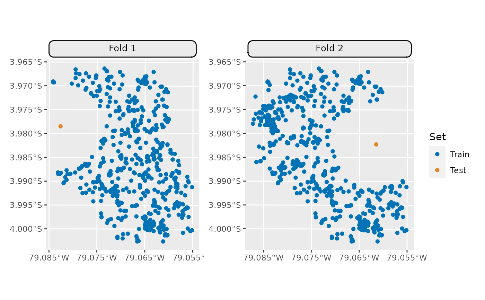

Visualization Functions for SpCV Buffer Methods.
Source:R/autoplot_spcv_buffer.R
autoplot.ResamplingSpCVBuffer.RdGeneric S3 plot() and autoplot() (ggplot2) methods to
visualize mlr3 spatiotemporal resampling objects.
# S3 method for ResamplingSpCVBuffer autoplot( object, task, fold_id = NULL, plot_as_grid = TRUE, train_color = "#0072B5", test_color = "#E18727", crs = NULL, ... ) # S3 method for ResamplingSpCVBuffer plot(x, ...)
Arguments
| object |
|
|---|---|
| task |
|
| fold_id |
|
| plot_as_grid |
|
| train_color |
|
| test_color |
|
| crs |
|
| ... | Passed to |
| x |
|
See also
Examples
# \donttest{ if (mlr3misc::require_namespaces(c("sf", "blockCV"), quietly = TRUE)) { library(mlr3) library(mlr3spatiotempcv) task = tsk("ecuador") resampling = rsmp("spcv_buffer", theRange = 1000) resampling$instantiate(task) ## single fold autoplot(resampling, task, fold_id = 1, crs = 4326) + ggplot2::scale_x_continuous(breaks = seq(-79.085, -79.055, 0.01)) ## multiple folds autoplot(resampling, task, fold_id = c(1, 2), crs = 4326) * ggplot2::scale_x_continuous(breaks = seq(-79.085, -79.055, 0.01)) }# }